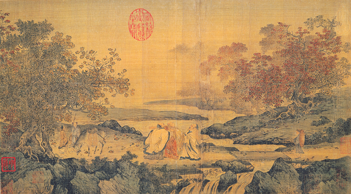

Painting
The shan shui style painting—"shan" meaning mountain, and "shui" meaning river—became prominent features in Chinese landscape art. The emphasis laid upon landscape painting in the Song period was grounded in Chinese philosophy; Taoism stressed that humans were but tiny specks amongst vast and greater cosmos, while Neo-Confucianist writers often pursued the discovery of patterns and principles that they believed caused all social and natural phenomena.
The making of glazed and translucent porcelain and celadon wares with complex use of enamels was also developed further during the Song period. Longquan celadon wares were particularly popular in the Song period. Black and red lacquerwares of the Song period featured beautifully carved artwork of miniature nature scenes, landscapes, or simple decorative motifs. However, even though intricate bronze-casting, ceramics and lacquerware, jade carving, sculpture, architecture, and the painting of portraits and closely viewed objects like birds on branches were held in high esteem by the Song Chinese, landscape painting was paramount. By the beginning of the Song dynasty a distinctive landscape style had emerged. Artists mastered the formula of creating intricate and realistic scenes placed in the foreground, while the background retained qualities of vast and infinite space. Distant mountain peaks rise out of high clouds and mist, while streaming rivers run from afar into the foreground.
There was a significant difference in painting trends between the Northern Song period (960–1127) and Southern Song period (1127–1279). The paintings of Northern Song officials were influenced by their political ideals of bringing order to the world and tackling the largest issues affecting the whole of their society, hence their paintings often depicted huge, sweeping landscapes. On the other hand, Southern Song officials were more interested in reforming society from the bottom up and on a much smaller scale, a method they believed had a better chance for eventual success. Hence, their paintings often focused on smaller, visually closer, and more intimate scenes, while the background was often depicted as bereft of detail as a realm without substance or concern for the artist or viewer. This change in attitude from one era to the next stemmed largely from the rising influence of Neo-Confucian philosophy. Adherents to Neo-Confucianism focused on reforming society from the bottom up, not the top down, which can be seen in their efforts to promote small private academies during the Southern Song instead of the large state-controlled academies seen in the Northern Song era.
Ever since the Southern and Northern Dynasties (420–589), painting had become an art of high sophistication that was associated with the gentry class as one of their main artistic pastimes, the others being calligraphy and poetry. During the Song dynasty there were avid art collectors that would often meet in groups to discuss their own paintings, as well as rate those of their colleagues and friends. The poet and statesman Su Shi (1037–1101) and his accomplice Mi Fu (1051–1107) often partook in these affairs, borrowing art pieces to study and copy, or if they really admired a piece then an exchange was often proposed. The small round paintings popular in the Southern Song were often collected into albums as poets would write poems along the side to match the theme and mood of the painting.
There were also some exotic foreign foods imported to China from abroad, including raisins, dates, Persian jujubes, and grape wine; rice wine was more common in China, a fact noted even by the 13th century Venetian traveler Marco Polo. Although grape-based wine had been known in China since the ancient Han dynasty Chinese ventured into Hellenistic Central Asia, grape-wine was often reserved for the elite. Besides wine, other beverages included pear juice, lychee fruit juice, honey and ginger drinks, tea, and pawpaw juice.
However, during the Song period, there were many acclaimed court painters and they were highly esteemed by emperors and the royal family. One of the greatest landscape painters given patronage by the Song court was Zhang Zeduan (1085–1145), who painted the original Along the River During Qingming Festival scroll, one of the most well-known masterpieces of Chinese visual art. Emperor Gaozong of Song (1127–1162) once commissioned an art project of numerous paintings for the Eighteen Songs of a Nomad Flute, based on the woman poet Cai Wenji (177–250 AD) of the earlier Han dynasty. The Southern Song dynasty court painters included Zhao Mengjian (趙孟堅, c. 1199–1264), a member of the Imperial family, known for popularising the Three Friends of Winter.
During the Song period Buddhism saw a small revival since its persecution during the Tang dynasty. This could be seen in the continued construction of sculpture artwork at the Dazu Rock Carvings in Sichuan province. Similar in design to the sculptures at Dazu, the Song temple at Mingshan in Anyue, Sichuan province features a wealth of Song era Buddhist sculptures, including the Buddha and deities clad in lavish imperial and monastic robes.